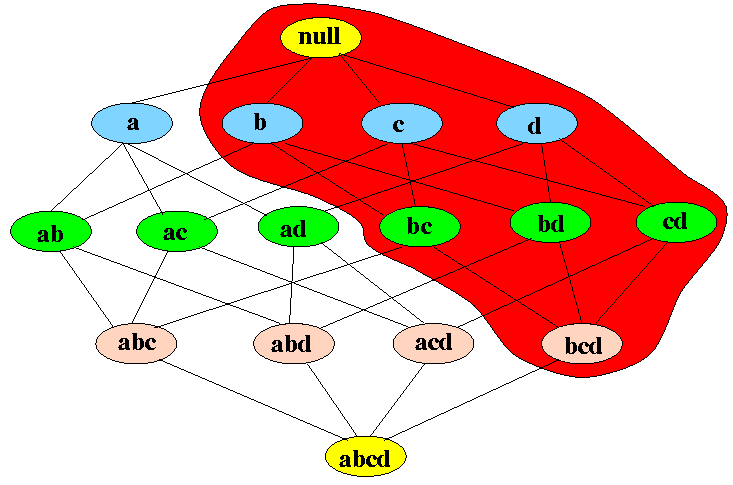

Association Analysis is the act of taking a large dataset and discovering interesting relationships both know and unknown from it. This is done by creating association rules. These are basically a compilation of data attributes that when present imply the presence of another attribute. The two measurements to be aware of are support and confidence. Support is a measurement of how often a set appears out of all the data objects. Confidence is the measurement of how often a correlation exist out that particular set. Association analysis usually follow the path of frequent itemset generation followed by rule generation. However before I get into those I'm going to talk about the Apriori principle.
Apriori is a Latin term meaning to know beforehand. Put simply in terms of association analysis it's don't look at possibilities you know won't yield results. Put a little more explicitly it's looking at the frequent/infrequent elements that occur in that dataset to know whether to investigate combinations of those itemsets. If you know that the element A only appears 5% of the time then any itemset containing A can only occur at most 5% of the time. Therefore any itemset containing A can be eliminated from investigation. Same thing goes for an itemset of BC, if they occur infrequently then itemset containing BC will be infrequent. Put in a nutshell that is all there is to Apriori.
So the first big thing to happen in association analysis is frequent itemset generation. The straightforward way of walking through this is have a preset threshold for both confidence and support values desired. From there look at all individual itemset supports (no need to look at confidence because for one item itemsets the confidence will be 100%). From her take all the items that were above the threshold and explore all combinations of them. From here remove the ones that don't meet the threshold and continue until there are no itemsets in the next generation that meet the threshold or you've reach the itemset that includes everything. The variations in this algorithm come in the spot where you're combining itemsets. The two most common are Fk-1 x F1 and Fk-1 x Fk-1. The Fk-1 x F1 one uses the first row of single item itemsets and the current row to produce the next row. The Fk-1 x Fk-1 one used the current row to produce the next one.
The next step is to create rules based on the results of the frequent itemsets. The process for this is excessively similar to the frequent itemset generation. A lattice can be set up for this where the first leaf is all of the items imply null and then from there break into all minus on imply one and keep retreating down until one implies all others. Using a set threshold for confidence and another for support walk through the lattice eliminating options that don't work. The Apriori principal is used here as well only a little reversed. Here it says as it grows out you don't restrict it (the lattice) by those that didn't work but you only grow it with those that did work. Once all itemsets have been analyzed the highest confidence highest support rules can be presented.
A lattice showing frequent itemsets